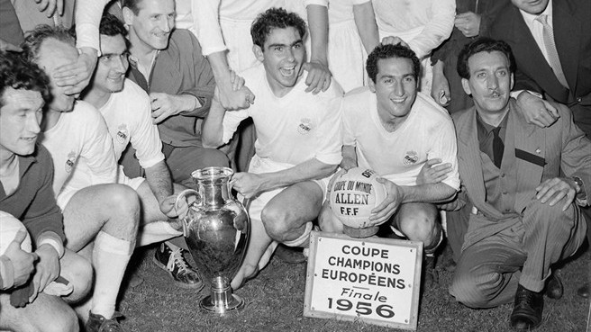
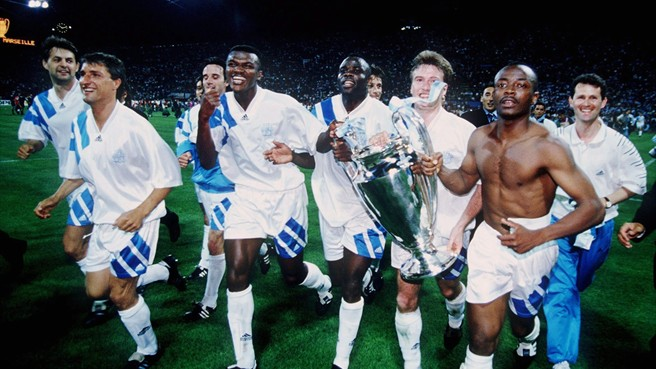

History
- The Champions Leagueis an annual continental club football competition organised by the Union of European Football Associations (UEFA) and contested by top-division European clubs.
- Introduced in 1992, the competition replaced the European Champion Clubs' Cup, or simply European Cup, which had run since 1955, adding a group stage to the competition and allowing multiple entrants from certain countries.
- The first edition of the European Cup took place during the 1955–56 season.
- The first team to ever win this competition was Real Madrid.
-
The UEFA champion league anthem is titled as “champion league” which was written by tony Britten, and is a version of George Frederic Handel’s Zadok the Priest.
- In 1991 UEFA requested the help of its commercial partners to help brand the champion league which resulted in the creation of the anthem and the logo(the star ball) for the champion league. The starball was made by Design Bridge which a London based firm.

